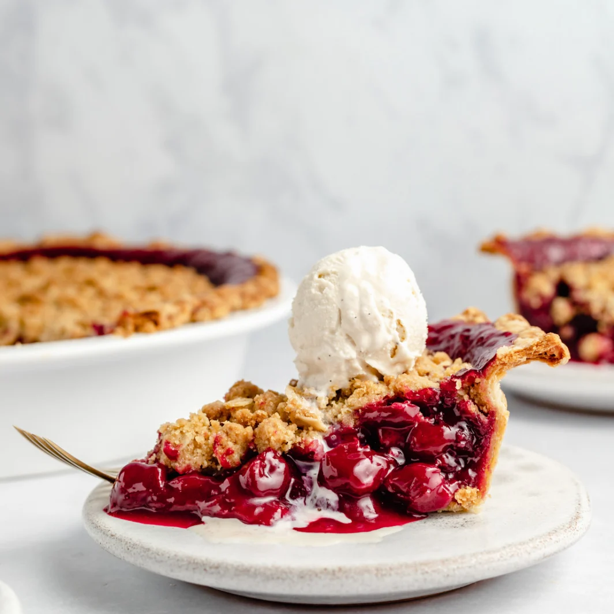

Dutch Tart Cherry Pie

Description
Gorgeous dutch tart cherry pie with a wonderful, golden crumb topping.
This homemade tart cherry pie recipe has a perfectly sweet filling with
hints of amaretto and is absolutely delicious served with a scoop of
vanilla ice cream. This will be the best tart cherry pie you’ll ever eat!
Ingredients
- 6 cups frozen tart cherries (about 24 oz tart cherries)
- 1 cup organic cane sugar (or granulated sugar)
- 2 tablespoons cornstarch
- 2 tablespoons flour
- 1/2 teaspoon almond extract
- 1 tablespoon butter
- 1 tablespoon amaretto
- 1 cup all-purpose flour
- ½ cup packed brown sugar
- ¼ cup rolled oats
- 6 tablespoons butter, melted
Steps
- Make the pie dough and shape the crust in a pie pan ahead of time, then store covered in the fridge. You can follow my recipe for an all butter flaky pie crust, use your favorite recipe, or a store-bought crust.
- To make the tart cherry pie filling: add frozen tart cherries, sugar, cornstarch, flour and almond extract to a large pot and place over medium heat. After 5 minutes or so, the cherries will thaw, begin to break down and the sugar will melt. Stir frequently during this time. Add in butter and amaretto and continue to stir. After another 5-10 or so minutes, the mixture will begin to thicken and start to bubble along the edges. Once the filling begins to stick slightly to the back of your spoon, remove it from the heat and set aside to cool off.
- Preheat your oven to 350 degrees F.
- While your oven preheats, make the dutch crumble topping: in a medium bowl, mix together the flour, brown sugar and oats. Add in the melted butter and stir together with a fork until it begins to form into crumbles and resembles clumpy wet sand. You may need to use your hands/fingers to form into nice crumbles. Cover the bowl with plastic wrap and place in the fridge for 5 minutes or until ready to use.
- Remove pie pan with pie crust from the refrigerator and place pie pan onto a large baking sheet. I do this to avoid any spillage that may happen as the pie filling bubbles and bakes. Pour cooled tart cherry pie filling into the crust, then top filling with the dutch crumble topping.
- Bake for 1 hour-1 hour 15 minutes or until the filling is very bubbly and the crumble is slightly golden brown. Check pie after 30 minutes to make sure the crust isn’t burning. If it is getting too golden brown, simply cover pie edges with foil or pie shield.
- Allow pie to cool on a wire rack until completely cooled before cutting into it (this is annoying, but if you cut into it before then the pie filling won't be set). The longer the pie rests, the easier it is to serve! Can be made a few days ahead of time. Pie is best served at room temp or just slightly warm. Serves 9. Great with vanilla bean ice cream. Enjoy!